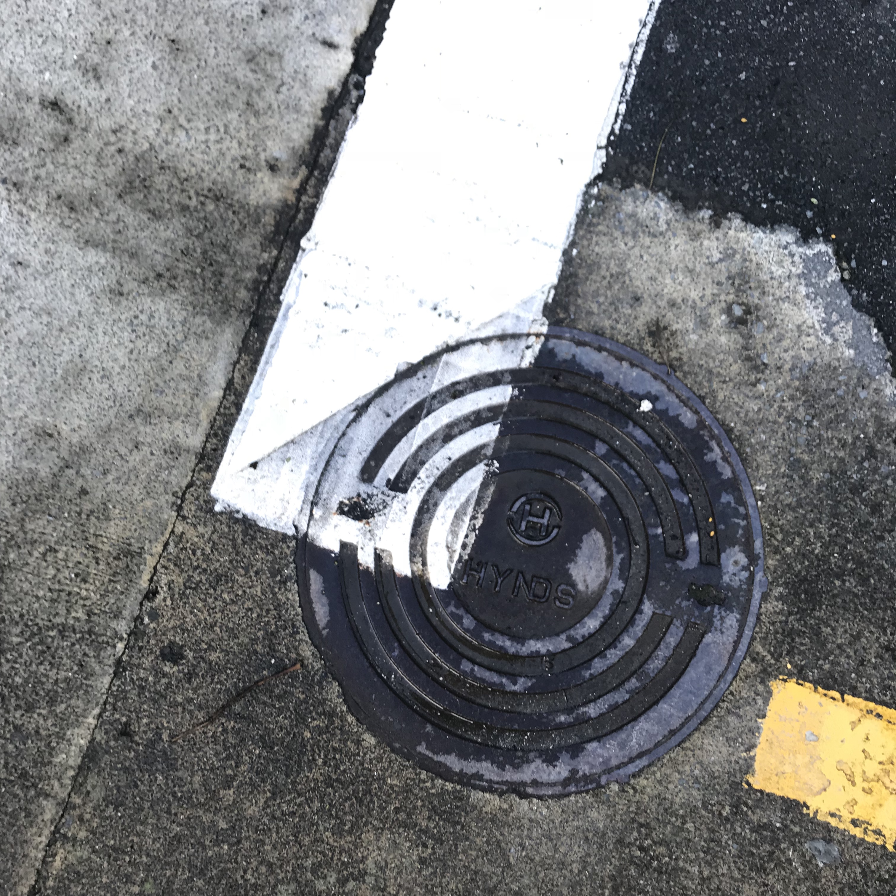
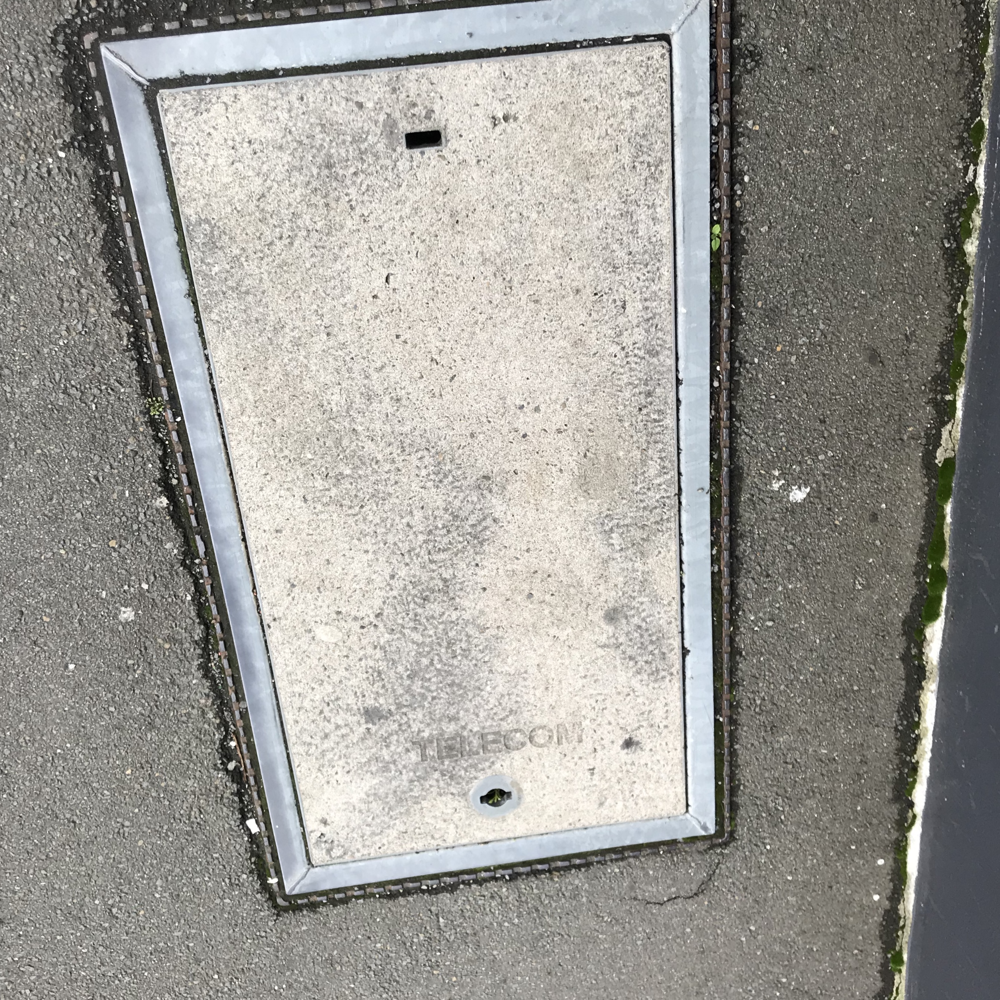

x
Examples in Wellington

This paticular manhole cover is sourced from the Wellington City Council to cover infrastructure related to the stormwater system in Wellington. Although this does not directly relate to providing internet access, the manhole still represents a piece of a giant puzzle, with the several underground networks working together to help the city run successfully.
This paticular manhole cover is sourced from Hynds which is a company who specialises in pipe systems and networks throughout New Zealand. Because Hynds specialises in a range of pipe systems, this manhole could be used for many different functions.
This manhole cover displays the telecom logo. However, it is highly likely that it is owned by chorus who often uses these older covers to cover access points to underground cable networks. These cable networks play a pivotal part in the internet infrastructre as these cables are what carry the information from one source to another.

This manhole cover does not show any signs of branding.However, it clearly covers a ray of electricial cables which run underground. These electrical networks provide power to machinery which allows us to both give and recieve information over the internet.